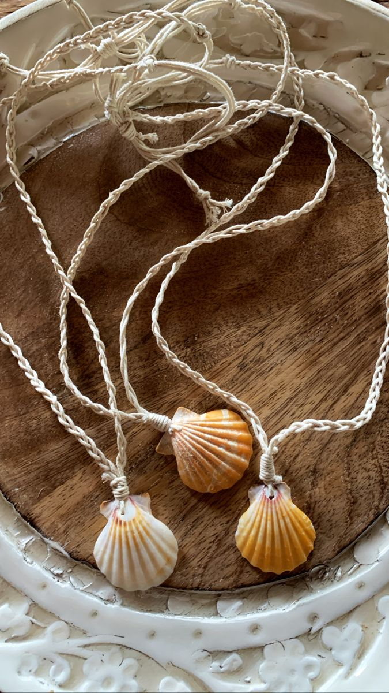
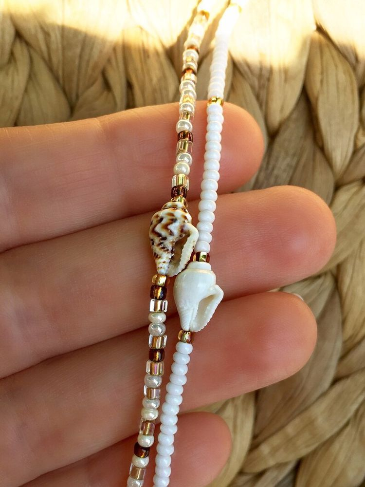
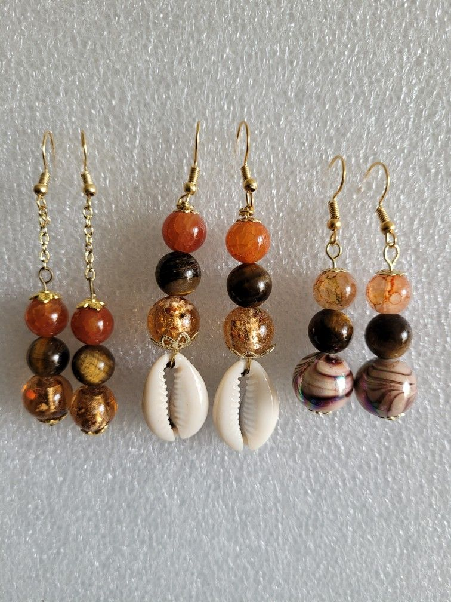
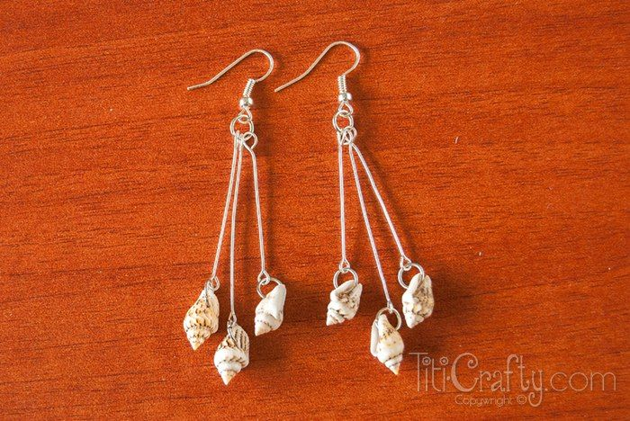

Tento ručně vyrobený šperk z pravých mořských mušlí v sobě ukrývá hřejivé sluneční paprsky, šumění vln a nespoutanou energii divokých pláží. Každý detail vypráví jedinečný příběh, který dokonale podtrhne vaši přirozenou krásu a dodá vašemu letnímu i každodennímu outfitu lehkost a eleganci. Je to víc než jen doplněk. Je to talisman plný svobody, který vám připomene nezapomenutelné chvíle u moře, ať už jste kdekoliv.




